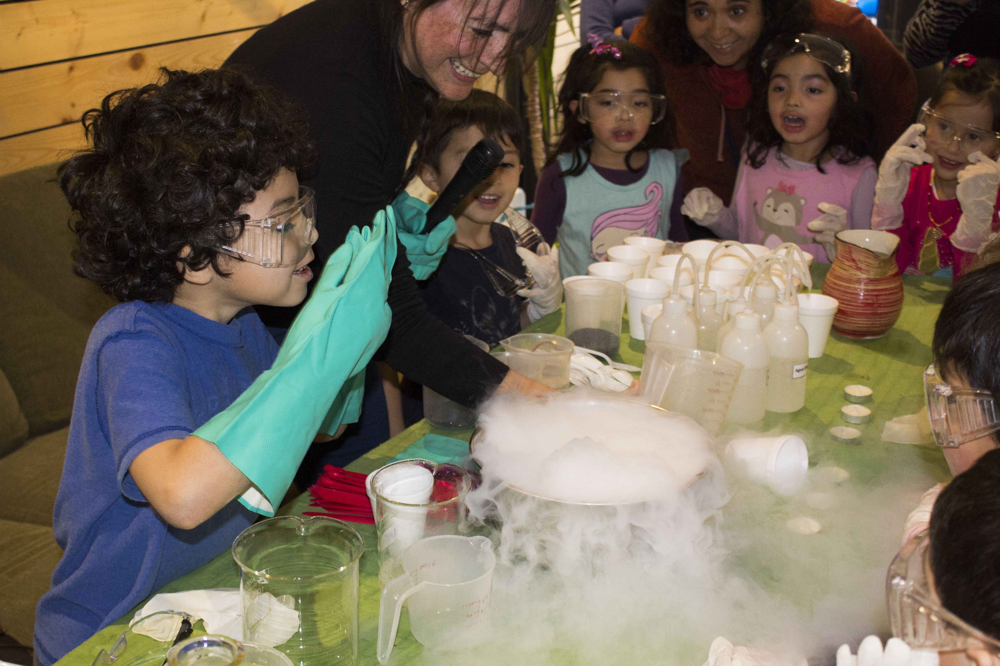
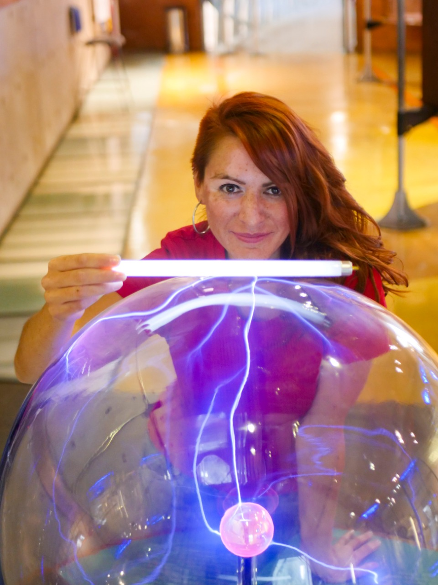
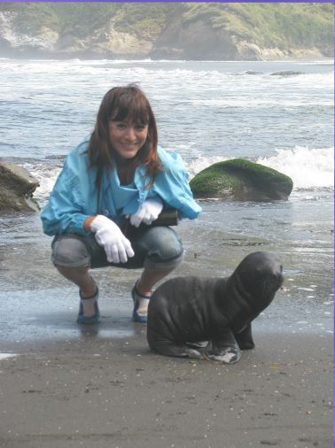
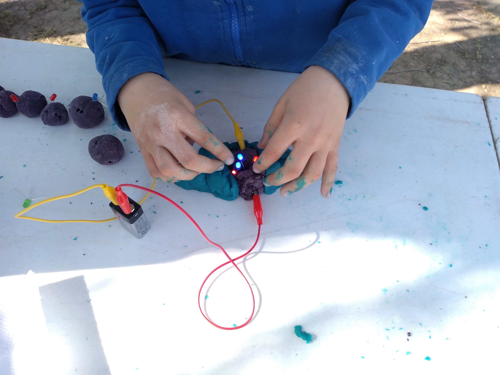
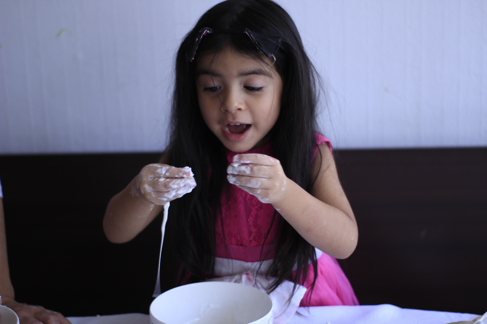

{kind=link}

ConexCiencia
Un grupo de niños y niñas participa con entusiasmo en un taller científico presencial.
Soy Carolina Lagos Morales, Mg. en Didáctica de las Ciencias Experimentales y una apasionada divulgadora científica. Mi misión es transformar la percepción de la ciencia, haciéndola accesible y atractiva para todos. Para lograrlo, desarrollo herramientas creativas que fomentan el pensamiento crítico y desmitifican conceptos complejos, especialmente entre niños y niñas.

Nuestra misión es transformar la manera en que las personas se relacionan con la ciencia. A través de talleres dinámicos y estimulantes, buscamos derribar mitos, despertar la curiosidad y fomentar el pensamiento crítico. Creemos que la ciencia es para todos, y nos esmeramos por hacerla accesible y relevante en la vida cotidiana. Colaboramos con escuelas, organizaciones y comunidades para crear un futuro donde la ciencia sea una herramienta para el desarrollo y la innovación.

Inspirar la pasión por la ciencia en cada rincón del país, creando una comunidad de mentes curiosas y comprometidas con el conocimiento científico.

En ConexCiencia creemos que la mejor manera de aprender es experimentar. Nuestros talleres han inspirado a cientos de niños, jóvenes y adultos a descubrir la ciencia de forma divertida y cercana.
Mira lo que dicen de nuestros talleres en redes sociales:
“Cada actividad nos recuerda que la ciencia está en todas partes y que cualquiera puede disfrutarla.”

Ofrecemos experiencias científicas diseñadas para inspirar

Un grupo de niños y niñas participa con entusiasmo en un taller científico presencial.

Una niña pequeña con un vestido rosado participa en una actividad interactiva de ciencia.

Un niño y una niña interactúan sonrientes y con gran entusiasmo con una maqueta didáctica que recrea un entorno prehistórico.

Un niño concentrado participa en un taller práctico de circuitos eléctricos básicos e introducción a la electrónica.

las manos de un estudiante interactuando activamente con un circuito eléctrico experimental en un taller al aire libre.

Un grupo de niños y niñas participa alegremente en un taller didáctico de ciencias y manualidades recicladas.
Actividades científicas que desarrollan habilidades de pensamiento científico a través de la experimentación.
Experiencias prácticas y lúdicas para centros educativos y agrupaciones.
Duración: 60 minutos
Números de participantes: grupos de 10 a 20 estudiantes
Materiales: Todos los materiales necesarios para la realización de los experimentos están incluidos
Espacio requerido: Los talleres pueden realizarse en sala de clases o laboratorio escolar
Los contenidos y actividades pueden adaptarse según el nivel educativo y los objetivos del establecimiento.
Celebraciones inolvidables llenas de experimentos sorprendentes.
Opción 1: “No es magia, ¡es Ciencia!”
*Espectáculo de 30 a 45 minutos
*incluye los materiales
*Regalo sorpresa para el cumpleañero/a
Opción 2: “No es magia, ¡es Ciencia!” más Taller de Cohetes
*Duración aproximada entre 60 a 80 minutos
*Todo lo incluido en la opción 1 más la ejecución del taller de cohetes
Charlas, ferias y jornadas de divulgación para todo público.
{kind=link}